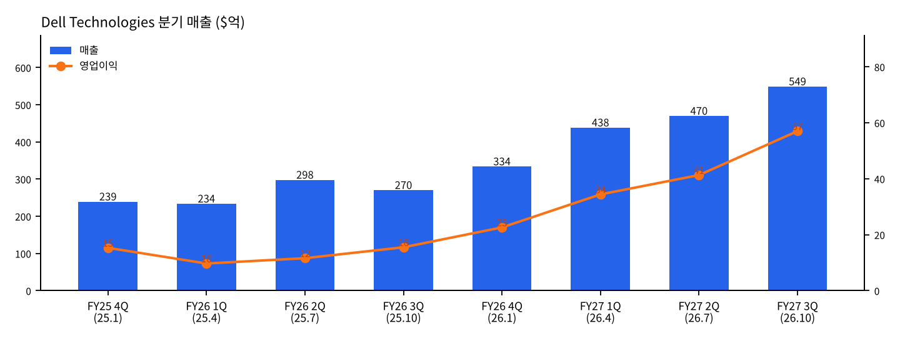
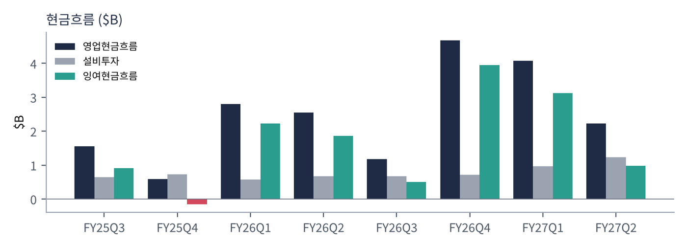
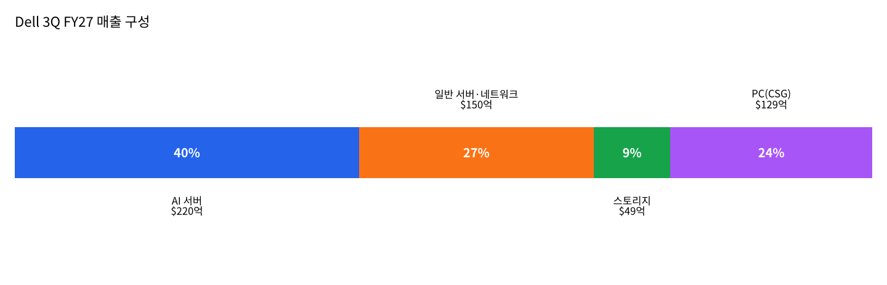
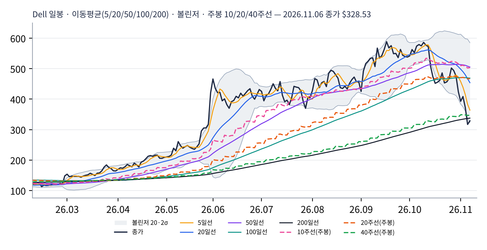
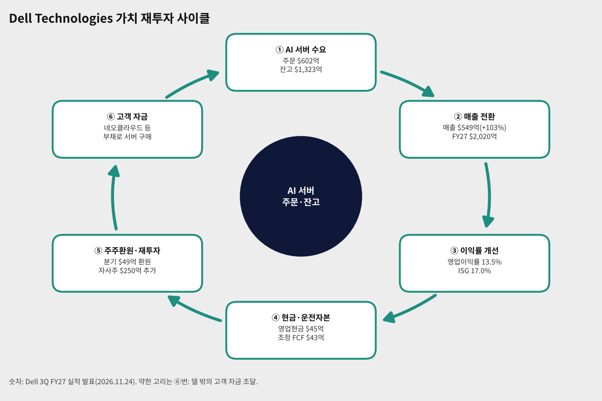

Dell은 PC(노트북·데스크톱)와 서버·스토리지를 파는 세계 최대 IT 하드웨어 회사 중 하나다. 2024년까지는 'PC 회사'로 평가받았지만 엔비디아 GPU를 탑재한 AI 서버를 일론 머스크의 xAI, 코어위브 같은 네오클라우드, 각국 정부·대기업에 대량 공급하면서 AI 인프라 핵심 기업이 됐다. 창업자 Michael Dell이 회장 겸 CEO다. 매출은 폭발하는데 이익률은 낮은 'AI 서버 시공사'라는 점이 이 종목의 특징이다.
| 항목 | 내용 |
|---|---|
| 종목 | Dell Technologies Inc. (DELL) · NYSE · IT 하드웨어 · 1984년 설립 · 본사 텍사스주 라운드록 |
| 밸류에이션 | TTM PER 13.2배 · P/S 1.06배 (11/27 스캐너, 종가 $312.55) |
| 최근 분기(3Q FY27) | 매출 $549억(+103%), 영업이익 $74억(13.5%), 순이익 $57억, EPS $8.82(+287%, 비GAAP $9.45), 주주환원 $49억 |
| AI 서버 | 주문 $602억, 매출 $220억(+291%), 수주 잔고 $1,323억 |
| 다음 분기·연간 가이던스 | 4Q FY27 매출 $563억(+69%), 비GAAP EPS $8.40. FY27 매출 $2,020억(기존 $1,920억, +78%), AI 서버 $780억(+216%), 비GAAP EPS $29.68(+188%) |
| 배당 | 분기 $0.63(2Q 발표 기준). 3Q에 추가 자사주 $250억 승인 |
| 다음 실적 | 4Q FY27·연간 실적: 2027년 2월 말 예정(회사 확정 일정은 확인 필요, 회계연도는 1월 말 종료) |
| 직책 | 인물 | 역할·특징 |
|---|---|---|
| 회장 겸 CEO | Michael Dell | 창업자. PC 회사를 서버·스토리지·AI 인프라 회사로 바꾼 장기 전략의 주인 |
| 부회장 겸 COO | 제프 클라크 | 분기 실적에서 AI 서버 수주·잔고를 설명하는 대변인. "IT 환경이 비용 센터에서 성장과 경쟁 우위를 만드는 가치 동력으로 바뀌었다" |
| CFO | 데이비드 케네디 | 가이던스·조정 FCF·주주환원 설명 |
경영 스타일: '수주가 보이면 공급망과 서비스 인력을 먼저 키운다'. 회사는 연간 매출 가이던스를 $1,920억에서 $2,020억(+78%)으로 한 번 더 올렸다. AI 서버 잔고는 3Q FY26 $184억 → 4Q FY26 $430억 → 3Q FY27 $1,323억으로 7배가 됐다. 공격적인 매출 확대 속에서도 주주환원($49억)과 추가 자사주 $250억 승인을 이어가는 균형형이다. 이익률은 AI 서버가 늘수록 낮아지는 구조임에도 규모의 경제로 영업이익률은 5~9%에서 13.5%로 올렸다.
엔비디아 GPU를 탑재한 랙 단위 서버·냉각·설치 서비스를 한 번에 공급한다. AI 옆에서 데이터를 처리할 일반 서버·네트워크(+235%)와 스토리지(+24%) 수요가 같이 커지는 것이 특징이다.
하이퍼스케일러는 서버를 직접 설계하지만 그 외의 수많은 기업·국가·네오클라우드는 Dell 같은 공급자가 필요하다. 엔비디아와 함께 'Dell AI 팩토리' 브랜드로 시장을 키운다.
다음 실적발표(4Q FY27, 2027년 2월 말 예정)는 세 가지 질문에 답하는 자리다.
1. AI 서버 잔고와 주문이 계속 늘어나나?
2. 영업이익률과 EPS가 매출만큼 따라오나?
3. 고객 신용 부담과 현금흐름이 안정되나?
한 줄 판정 규칙: 첫 질문의 잔고가 늘고 셋째 질문의 현금이 이익을 따라오면 약한 고리가 풀리고, 그렇지 않으면 사이클의 약점이 남는다.
일정: 4Q FY27 실적 발표일은 확인 필요. 위 현재값은 3Q FY27 발표(2026.11.24) 기준이다.
| 분기 (종료월) | 매출 | 매출총이익률 | 영업이익 | 영업이익률 | 순이익 | EPS | 조정 EPS | 영업현금 | AI 서버 | 특이 사항 |
|---|---|---|---|---|---|---|---|---|---|---|
| FY25 4Q (25.1) | $239.3억 | 23.7% | $21.6억 | 9.0% | $15.3억 | 2.15 | 2.68 | $5.9억 | – | |
| FY26 1Q (25.4) | $233.8억 | 21.1% | $11.7억 | 5.0% | $9.7억 | 1.37 | 1.55 | $28.0억 | $19억 | |
| FY26 2Q (25.7) | $297.8억 | 18.3% | $17.7억 | 5.9% | $11.6억 | 1.70 | 2.32 | $25.4억 | $82억 | |
| FY26 3Q (25.10) | $270.1억 | 20.7% | $21.2억 | 7.8% | $15.5억 | 2.28 | 2.59 | $11.7억 | – | 잔고 $184억 |
| FY26 4Q (26.1) | $333.8억 | 20.2% | $30.9억 | 9.3% | $22.6억 | 3.33* | 3.89 | $46.7억 | – | 잔고 $430억 |
| FY27 1Q (26.4) | $438.4억 | 17.7% | $36.6억 | 8.3% | $34.4억 | 5.24 | 4.86 | $40.8억 | $161억 | |
| FY27 2Q (26.7) | $469.7억 | 20.9% | $53.9억 | 11.5% | $41.3억 | 6.34 | 7.04 | $22.3억 | $164억 | 잔고 $950억 |
| FY27 3Q (26.10) | $549.0억 | – | $74.0억 | 13.5% | $57.0억 | 8.82 | 9.45 | $45.0억 | $220억 | 잔고 $1,323억 |
EPS는 희석 GAAP 주당순이익이고, 조정 EPS는 트레이딩뷰 실적 탭의 Reported EPS다. 애널리스트 컨센서스와 같은 기준으로, 회사가 일회성 비용·주식보상·무형자산 상각 등을 제외해 발표한 값이다. 회사가 조정 EPS를 발표하지 않는 종목·분기는 –로 표시했다(3Q FY27 값은 회사 발표문 기준, 2026.11.28 조회).
EPS는 희석 주당순이익(GAAP, SEC 제출 자료 기준)이다. *는 4분기를 '연간 EPS − 1~3분기 합'으로 계산한 근사치라 실제 발표값과 다를 수 있다.


흐름 요약: 분기 매출이 1년 전 $270억에서 $549억으로 103% 늘었다(3Q FY26 $270.1억 대비, 내 계산). 늘어난 $279억 중 AI 서버가 약 $220억 가까이 차지하고(전년 AI 서버 매출은 이번 수집에서 확인하지 못함), 일반 서버·네트워크도 +235%로 함께 늘었다. 인프라 사업부(ISG) 영업이익률은 17.0%로 올랐고 회사 전체 영업이익률은 13.5%다. 영업현금은 분기마다 출렁인다(2Q $22.3억 → 3Q $45억). 3Q 매출총이익률은 이번 수집에서 확인하지 못해 '–'로 두었다.
| 사업 | 돈을 버는 방식 | 3Q FY27 | 성장 |
|---|---|---|---|
| AI 최적화 서버 (ISG) | 엔비디아 GPU를 탑재한 랙 단위 서버·냉각·설치 서비스. 네오클라우드·정부·대기업 | $220.0억 | +291% |
| 일반 서버·네트워크 (ISG) | 파워엣지 서버, 네트워크 장비 | $150.0억 | +235% |
| 스토리지 (ISG) | 파워스토어·파워스케일 등 데이터 저장 장비 | $49.0억 | +24% |
| 상업용 PC (CSG) | 기업용 노트북·데스크톱(AI PC 교체 수요) | $129.0억(CSG 합계) | +3% |
| 소비자 PC (CSG) | 개인용 PC | 구분 미확인 | – |

매출 중심이 1년 만에 PC에서 서버로 넘어갔다. 1년 전 인프라(ISG)와 PC(CSG) 매출은 $141억 대 $125억(CSG 전년은 +3% 역산, 내 계산)이었는데 지금은 $420억 대 $129억이다. 영업이익 비중은 ISG 91%, CSG 9%(내 계산)다. ISG 영업이익은 $71억(+308%, 이익률 17.0%), CSG는 $7.04억(-6%, 이익률 5.5%)이다. 상업용·소비자 PC 구분은 이번 발표문에서 확인하지 못했다.
클라크 부회장의 메시지는 "IT 환경이 비용 센터에서 성장과 경쟁 우위를 만드는 가치 동력으로 바뀌었고 고객은 그에 맞게 투자하고 있다"는 것이다. Dell이 가려는 곳은 클라우드 밖의 모든 AI 데이터센터를 짓는 '종합 시공사'다.
| 축 | 내용 |
|---|---|
| AI 팩토리 | GPU 서버·스토리지·네트워크·냉각·설치까지 한 번에 공급. 엔비디아와 함께 'Dell AI 팩토리' 브랜드 |
| 고객 다변화 | 네오클라우드 → 소버린(국가) AI → 대기업 자체 데이터센터. 3Q FY26에 회사는 파이프라인이 잔고의 몇 배라고 설명 |
| 규모의 경제 | 공급망·서비스 인력·금융(Dell Financial Services)으로 대형 주문을 빠르게 납품 |
| 주주환원 | 분기 $49억 자사주·배당, 추가 $250억 승인. 이익 증가를 주주에게 돌려줌 |

| 이동평균 | 값 | 종가 대비 | 해석 |
|---|---|---|---|
| 5일선 | $303.56 | +2.2% | 현재가가 아래 |
| 20일선 | $348.16 | +17.2% | 현재가가 아래 |
| 50일선 | $456.82 | +53.8% | 현재가가 아래 |
| 100일선 | $457.04 | +53.9% | 현재가가 아래 |
| 200일선 | $350.99 | +18.2% | 현재가가 아래 |
52주 고점 $595.51(2026-09-18), 52주 저점 $110.22(2026-01-21). 종가 $297.06(2026-11-25) 기준이다.
| 규칙 | 기준 | 현재 값 | 신호 |
|---|---|---|---|
| 장기 추세 필터 | 종가 vs 200일선 | $297.06 < $350.99 | 매도 |
| 중장기 교차 | 50일선 vs 200일선 | $456.82 > $350.99 | 매수 |
| 단기 교차 | 20일선 vs 50일선 | $348.16 < $456.82 | 매도 |
| 돈키언 채널 | 55일 고가 $595.51 / 저가 $265.00 | 중간값 $430.25 아래 | 매도 |
| 1개월 모멘텀 | 21거래일 수익률 | -40.8% (기준 $501.96) | 매도 |
| 3개월 모멘텀 | 63거래일 수익률 | -37.1% (기준 $472.26) | 매도 |
| 6개월 모멘텀 | 126거래일 수익률 | -6.3% (기준 $317.05) | 매도 |
| 12개월 모멘텀 | 252거래일 수익률 | +133.5% (기준 $127.22) | 매수 |
| 종합 (8개 평균) | -0.50 | 매도 우위 |
해석: 8개 신호 중 매수 2개, 매도 6개(점수 -0.50, 매도 우위)다. 14일 ATR $38.53 (13.0%).
| 가격·조건 | 무엇이 바뀌나 | 의미 |
|---|---|---|
| $350.99 | 종가 vs 200일선 | 돌파하면 매도 → 매수 |
| $501.96 | 1개월 기준가 | 돌파하면 매도 → 매수 |
| $472.26 | 3개월 기준가 | 돌파하면 매도 → 매수 |
| $317.05 | 6개월 기준가 | 돌파하면 매도 → 매수 |
| $127.22 | 12개월 기준가 | 이탈하면 매수 → 매도 |
| $430.25 | 돈키언 중간값 | 돌파하면 매도 → 매수 |
| 50일선이 200일선 아래로 | 50/200 교차 | 매수 → 매도 |
| 구분 | 가격대 | 근거 |
|---|---|---|
| 저항 1 | $303.56 | 5일선 |
| 저항 2 | $348.16 | 20일선 |
| 지지 1 | $265.00 | 55일 저점 |
| 지지 2 | $110.22 | 52주 저점 |
점수는 -0.50(매도 우위)다. 14일 ATR은 $38.53로 현재가의 13.0%다. 가까운 저항 $303.56을 종가로 넘는지와 가까운 지지 $265.00를 지키는지가 신호 전환의 기준이다. 3Q 실적(11/24) 이후 변동이 크다. (내 가정, 매매 권유 아님)
| 악재 요인 | 내용 | 강도 |
|---|---|---|
| 고객 신용 | 네오클라우드·AI 스타트업 고객이 부채로 서버를 사는 구조. 고객 자금 조달이 막히면 주문 취소·연기(10월 이후 코어위브·오라클과 동반 급락) | 높음 |
| 경쟁 | 슈퍼마이크로·HPE·레노버·대만 ODM(폭스콘·콴타)과 가격 경쟁 | 중간 |
| 이익률 가이던스 | 4Q 매출 가이던스 +69%인데 비GAAP EPS $8.40이 3Q $9.45보다 낮다. 원가·믹스 영향 여부는 확인 필요 | 중간 |
| 원가 | GPU·메모리 원가 상승, 공급 부족 시 납품 지연. 매출총이익률 18~21%로 낮음 | 중간 |
| 엔비디아 의존 | AI 서버 매출 대부분이 엔비디아 GPU. 배정 물량이 성장 속도를 결정 | 중간 |
| 현금흐름 변동 | 대형 주문으로 운전자본 부담이 분기마다 크게 변동 | 참고 |
| 티커 | 회사 | PER(TTM) | PEG | P/S | EPS 성장(YoY) |
|---|---|---|---|---|---|
| DELL | Dell Technologies | 13.2배 | 0.06 | 1.06배 | +217% |
| NVDA | NVIDIA | 15.8배 | 0.13 | 10.39배 | +131% |
| AMD | AMD | 87.9배 | 0.71 | 15.11배 | +127% |
| AVGO | Broadcom | 39.4배 | 0.38 | 16.51배 | +100% |
| MU | Micron | 8.4배 | 0.01 | 5.42배 | +879% |
| ORCL | Oracle | 16.5배 | 0.36 | 4.58배 | +48% |
| SMCI | Super Micro Computer | 4.9배 | 0.02 | 0.31배 | +283% |
| HPE | Hewlett Packard Enterprise | 13.7배 | – | 1.24배 | – |
EPS 성장률은 트레이딩뷰 TTM 값이다. 서버 직접 경쟁사 중 Super Micro·HPE를 이번에 추가했고 Lenovo는 데이터를 확보하지 못했다.
비교 결론: Dell PER 13.2배는 NVIDIA(15.8)·Broadcom(39.4)·AMD(87.9)보다 낮고 HPE(13.7)와 비슷하며 Super Micro(4.9)보다는 높다. PEG 0.06은 Micron(0.01)·Super Micro(0.02) 다음으로 낮다. AI 인프라 중 가장 싼 축이지만 낮은 마진(영업이익률 13.5%)과 고객 신용 리스크를 함께 지는 종목이다. 같은 AI 수혜주라도 NVIDIA는 칩 마진, Dell은 시스템 조립·공급 마진이라는 점이 다르다.
Dell은 적자 기업이 아니다. TTM 순이익 약 $155억(분기 합, 내 계산), TTM 영업이익 약 $195억이라 '런웨이'(남은 현금으로 몇 년 버티나)는 의미가 없다. 대신 AI 서버 고객의 자금 조달이 흔들릴 때 이익이 얼마나 빠지는지와 운전자본·부채 쪽을 점검했다.
| 지표 | 값 | 계산·출처 | 해석 |
|---|---|---|---|
| 영업현금흐름 (3Q FY27) | $45억 | 회사 발표 | 분기 출렁임이 큼(2Q $22.3억, 1Q $40.8억, 4Q FY26 $46.7억) |
| 조정 잉여현금흐름 (3Q FY27) | $43억 | 회사 계산 | 2Q는 영업현금 $22.3억 대비 조정 FCF $81억이었다. 정의 상세는 10-Q 확인 필요 |
| 잉여현금흐름 (TTM) | +$115.3억 | 트레이딩뷰 스캐너 | TTM 순이익(약 $155억)의 74%(내 계산) |
| 현금 / 총부채 | $135.5억 / $377.0억 | 트레이딩뷰 스캐너 | 순부채 $241.4억(내 계산). 금융 자회사 차입 포함 가능 |
| 주주환원 (3Q FY27) | $49억 | 회사 발표 | 추가 자사주 $250억 승인. 분기 영업현금과 비슷한 수준 |
| 가정 | 매출 영향 | 이익 영향 (가정) | 의미 |
|---|---|---|---|
| 4Q AI 서버 매출 약 $235억 중 30%가 연기·취소 | -$70.5억 | 영업이익률 13.5% 적용 시 -$9.5억 → EPS 약 -$1.2 (FY27 비GAAP EPS $29.68의 약 4%) | AI 서버 마진이 낮아 매출 충격이 이익에 덜 전달된다 |
| 4Q AI 서버 매출 50% 미달 | -$117.5억 | -$15.9억 → EPS 약 -$2.0 (약 7%) | 연간 EPS는 $27~28 안팎이라 PER 약 11배 |
| 4Q AI 서버 매출 전량 이연 (극단) | -$235억 | -$31.7억 → EPS 약 -$3.9 (약 13%) | 이연일 뿐 취소는 아니면 다음 분기 매출로 이동한다 |
연기·취소율, 적용 이익률, 세율 20%, 주식 수 약 6.5억 주(3Q 순이익 $57억 ÷ EPS $8.82로 역산)는 모두 내가 둔 스트레스 가정이다. AI 서버의 실제 영업이익률은 회사 평균(11.5%)보다 낮을 수 있다.
| 기준 | 매출 | P/S | 비고 |
|---|---|---|---|
| 트레이딩뷰 표시값(11/27 스캐너) | – | 1.06배 | 산출 기준 차이 |
| 최근 4분기(TTM) | $1,791억 | 1.06배 | 매출 $1,791억(분기 합 $1,791억, 스캐너 $1,790.6억) |
| FY27 가이던스 | $2,020억 | 0.94배 | 회사 가이던스 |
| 동종 AI 반도체·서버 | – | – | NVIDIA 10.4, AMD 15.1, Broadcom 16.5, Micron 5.4, Qualcomm 4.1, HPE 1.2, Super Micro 0.3 |
해석: P/S 1.06배는 하드웨어 조립·판매 사업의 낮은 마진을 그대로 반영한다. NVIDIA·AMD(10~15배)와 비교하면 10분의 1이지만 그 차이의 대부분은 마진 차이다(Dell 영업이익률 13.5%). HPE(1.2배)와는 비슷하고 Super Micro(0.3배)보다는 높다. Dell에서는 P/S보다 PER·PEG가 더 정직한 지표다.
| 지표 | 값 | 판정 |
|---|---|---|
| TTM 영업이익 | $195.4억 | 흑자 분기 합: 4Q FY26 $30.9억 + 1Q $36.6억 + 2Q $53.9억 + 3Q $74.0억(내 계산) |
| EBITDA (스캐너, TTM) | 값 없음 | 이번 조회에서 스캐너가 EBITDA를 주지 않았다. 감가상각비를 확인하지 못해 계산하지 않음 |
| TTM 영업이익률 | 10.9% | $195.4억 ÷ $1,791억(내 계산). 3Q 단독은 13.5% |
| 순부채 / TTM 영업이익 | 1.2배 | 순부채 $241.4억(스캐너 총차입금 $377.0억 − 현금 $135.5억) |
영업이익률이 5~9%에서 13.5%로 올라가는 추세다. 매출총이익률이 낮아도 영업비용이 매출 증가만큼 늘지 않아 이익률이 개선되고 있다. 이번에는 EBITDA 대신 영업이익을 기준으로 삼았다.
| 방식 | PER | EPS 성장률 | PEG | 판정 |
|---|---|---|---|---|
| 트레이딩뷰 (TTM, 11/27) | 13.2배 | +217% | 0.06 | 적극 매수 |
| 선행 (FY27 비GAAP EPS $29.68, 가이던스) | 10.5배 ($312.55 ÷ $29.68) | +188% (가이던스) | 약 0.06 | 적극 매수 |
| 선행 (FY27 GAAP EPS $28.24) | 11.1배 | – | – | FY27 PER 참고 |
| 보수적 (FY28 EPS +20% 가정) | 10.5배 | +20% | 0.53 | 투자 적격 |
| 스트레스 (FY28 EPS +10% 가정) | 10.5배 | +10% | 1.05 | 기준 초과 |
판정: PEG 0.06 → '적극 매수' 기준(0.5 이하) 충족, 선행 기준으로도 0.06. 이번 대상 중 가장 낮은 축이다. 다만 이 낮은 PEG는 FY27 이익이 약 2.9배가 되는 구간의 값이라 성장이 FY28에 +20%로 꺾여도 0.53으로 기준 안, +10%에서는 1.05로 기준을 약간 넘는다. AI 서버 이익 성장이 한 해 더 이어지는지가 PEG를 정한다. FY28 성장률은 내 가정이며 회사가 제시한 수치가 아니다.

Dell 사이클의 엔진은 고객의 AI 투자 의지가 만드는 서버 주문과 잔고다. 주문이 매출이 되고 규모가 커지면 이익률이 올라가며, 이익과 현금이 주주환원과 공급망 투자로 돌아간다. 이 고리의 가장 바깥쪽에 고객의 자금 조달이 있다.
| 고리 | 현재 숫자 | 고리 강도 | 약해지는 신호 |
|---|---|---|---|
| ① AI 서버 수요 | 주문 $602억, 잔고 $1,323억(1년 만에 7배), 일반 서버·네트워크 +235% | 강함 | 주문 감소, 잔고 증가 둔화 |
| ② 매출 전환 | 매출 $549억(+103%), FY27 가이던스 $2,020억(+78%) | 강함 | 4Q 매출 $563억 미달 |
| ③ 이익률 개선 | 영업이익률 13.5%, ISG 17.0%. 4Q EPS 가이던스가 3Q보다 낮음 | 개선 | GPU·메모리 원가 상승으로 매출총이익률 추가 하락 |
| ④ 현금·운전자본 | 영업현금 $45억, 조정 FCF $43억(2Q는 $22.3억 vs $81억), 분기 변동 큼 | 변동 | 재고·매출채권 급증으로 영업현금 마이너스 |
| ⑤ 주주환원·재투자 | 분기 $49억 환원, 추가 자사주 $250억 승인 | 여유 | 환원이 영업현금을 넘어 차입 의존 |
| ⑥ 고객 자금 | 네오클라우드·AI 스타트업이 부채로 서버를 구매하는 구조 | 주의 | 코어위브·오라클 등 고객 신용 악화(10월 이후 동반 급락) |
이 사이클의 구조: 마이크로소프트·알파벳은 번 돈으로 짓지만 Dell은 고객이 짓는 돈을 서버로 받아 가는 위치다. 그래서 Dell 자신의 대차대조표는 건전한데(순부채가 TTM 영업이익의 약 1.2배) 사이클의 약한 고리는 Dell 밖(⑥)에 있다. 강한 고리는 ①·②·③이고 약한 고리는 ⑥과 ④다.